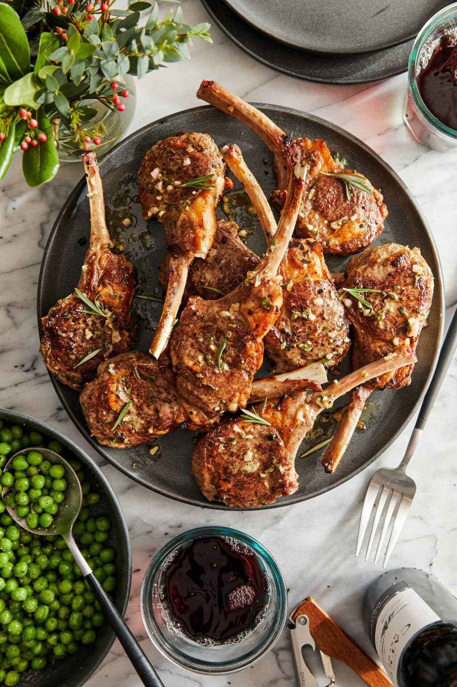

Garlic Rosemary Lamb Chops:

Ingredients:
- 1/2 cup extra-virgin olive oil
- 3 cloves garlic, minced
- 1 shallot, diced
- 1 1/2 tablespoons red wine vinegar
- 2 teaspoons Dijon mustard Mustard
- 1 tablespoon chopped fresh rosemary
- 1 tablespoon chopped fresh thyme leaves
- 1 tablespoon lemon zest
- Kosher salt and freshly ground black pepper, to taste
- 2 ½ pounds frenched rack of lamb, excess fat trimmed and cut into chops
- 1 tablespoon canola oil
Directions:
- In a medium bowl, combine olive oil, garlic, shallot, red wine vinegar, Dijon, rosemary, thyme, lemon zest, 1 teaspoon salt and 1/2 teaspoon pepper; set aside 1/4 cup of the mixture in the refrigerator until ready to serve.
- In a gallon size Ziploc bag or large bowl, combine lamb chops and remaining olive oil mixture; marinate for at least 2 to 6 hours, turning the bag occasionally. Drain the lamb chops from the marinade.
- Using paper towels, pat both sides of the lamb chops dry; season with salt and pepper, to taste.
- Heat canola oil in a large cast iron skillet over medium high heat. Working in batches, add lamb chops to the skillet in a single layer and cook until it reaches an internal temperature of 145 degrees F, about 3-4 minutes per side, or until desired doneness. Let rest 5 minutes.
- Serve immediately with reserved 1/4 cup olive oil mixture.